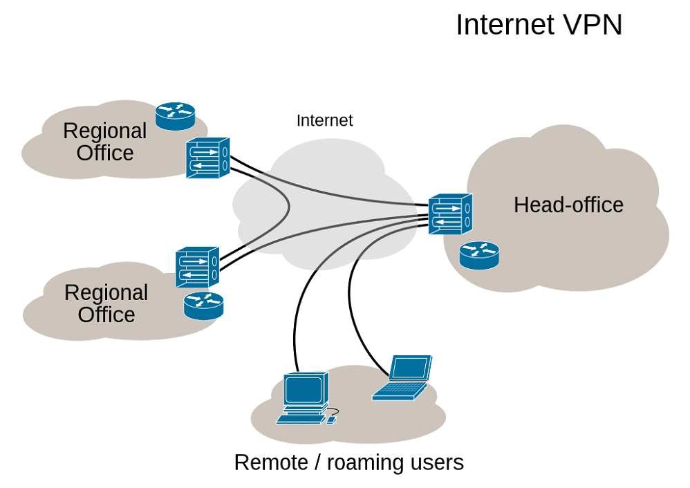

je v informatice prostředek k propojení několika počítačů prostřednictvím nedůvěryhodné počítačové sítě (např. veřejný internet). Lze tak snadno dosáhnout stavu, kdy spojené počítače budou mezi sebou moci komunikovat, jako kdyby byly propojeny v rámci jediné uzavřené privátní (a tedy většinou důvěryhodné) sítě. Při navazování spojení je totožnost obou stran ověřována pomocí digitálních certifikátů, dojde k autentizaci, veškerá komunikace je šifrována, a proto lze takové propojení považovat za bezpečné.
VPN vytváří virtuální point-to-point propojení skrze tunnelin protokolu přes již existující síť. Aby mohla VPN fungovat tak jak jí všichni známe musíme celý náš provoz routovat skrze tento tunel až na zařízení které to VPN hostuje.
Typy VPN
Site-to-site: Propojuje dvě sítě, nebo skupiny kanceláří například k datacentru. Propojení může běžet přes ne tak standartní síť jako je například IPv6 sítě připojené přes IPv4 síť.
Remote access (host-to-network): Propojuje jednotlivce se sítí, poskytuje přístup do enterprise sítě, jako je intranet. Můžou používat zaměstnanci, když pracují z domova, nebo přístup z mobilu k důležitým funkcionalitám bez potřeby je zveřejňovat na internet.
Extranet-based site-to-site: Intranet site-to-site VPN popisuje nastavení kde sítě spojené VPN patří jedné a té samé organizaci, kdežto extranet site-to-site může spojovat sítě více organizací.

Zabezpečení
Za pomocí VPN se nedá komunikovat úplně anonymně ale lze zvýšit soukromý a ochranu a ochranu. K zabránění zveřejnění soukromých informací nebo data sniffing (prohlížet obsah paketů komunikace). VPN typicky umožňuje pouze autentifikovat vzdálený přístup za pomocí tunneling protocol a bezpečné šifrované techniky.
VPN poskytuje:
Confidentiality (důvěrnost) jako je že i kdyby se někomu dostaly do rukou pakety, útočník z nich nic nezhjistí protože informace v nich budou zašifrované
Sender authentification (ověření odesílatele) zabraňuje neoprávněným uživatelům přístup k VPN
Message integrity (integrita zpráv) detekce a zamítnutí instancí které se pokouší manipulovat s přenášenými zprávami
Autentifikace
Endpointy tunelu musí být autentifikovány dřív než VPN tunel může být založen. Remote access VPN může používat pro autentifikaci heslo, biometrics (otisk prstu, face id), two-factor autentification nebo jiné kryptografické metody. Site-to-Site tunely běžně používají heslo nebo digitální certifikáty. Záleží na VPN protokolu může například mít jedna strana uložený klíč (certifikát) a spojení se může provést automaticky bez zásahu administrátora.
Tunel
Jedná se o šifrované spojení mezi dvemi zařízeními. Klientským zařízením a VPN serverem. Bez šifrovacího klíče je neprolomitelný, takže ani hacker nebo ISP se nemůžou dostat k datům přenášeným touto cestou.
Inicializace spojení: Klient (například váš počítač) se pokusí navázat spojení se serverem VPN. Klient i serer musí být správně nakonfigurovány pro vzájemné připojení.
Autentizace: Klient a server se vzájemně autentizují, aby ověřili svoji idnetitu. To může zahrnovat uživatelské jméno a heslo, certifikáty nebo jiné metody ověření.
Vytvoření tunelu: Po úspěšné autentizaci se klient a server dohodnou na parametrech tunelu, jako je použitá šifrovací metoda a klíčový materiál. Tyto parametry určují, jak bude komunikace šifrována a zabezpečena.
Šifrování dat: Jakmile je tunel vytvořen, veškerá data odesílaná mezi klientem a serverem jsou šifrována pomocí dohodnuté šifrovací metody. Tím je zajištěna bezpečnost přenášených informací.
Přenos dat: Šifrovaná data jsou přenášena přes veřejnou síť jako tunelový průchod. Veřejná síť (například internet) je nezabezpečená, ale díky šifrování dat ve VPN tunelu jsou informace chráněny před odposlechem a zásahy třetích stran.
Dešifrování dat: Přijatá data na druhé straně tunelu (server VPN) jsou dešifrována a předána cílovému serveru nebo zařízení, ke kterému se klient připojuje.
Protokoly
OpenVPN: OpenVPN je populární open source protokol, který je široce používán pro vytváření VPN tunelů. Je považován za bezpečný a spolehlivý. OpenVPN podporuje, jak šifrování provozu na síťové vrstvě (SSL/TLS), tak i implementaci ve vrstvě 2 (ethernetového rámce). Tento protokol je kompatibilní s různými operačními systémy a je schopný pracovat skrze firewally a NAT.
IPSec (Internet Protocol Security): IPSec je sada protokolů používaných pro zabezpečení síťové komunikace. Poskytuje šifrování, integritu a autentizaci dat přenášených skrze IP sítě. IPSec je nejčastěji implementován ve dvou režimech: Transport mode(pouze šifrování datového obsahu) a Tunnel mode (šifrování celého IP paketu). Tento protokol se často používá pro síťové spojení mezi síťmi nebo mezi síťmi a jednotlivými zařízeními.
PPTP (Point-to-Point Tunneling protocol): PPTP je jeden z nejstarších VPN protokolů. Je snadno konfigurovatelný a podporovaný mnoha operačními systémy. PPTP vytváří tunel mezi klientem a serverem pomocí tzv. GRE tunelování (Generic Routing Encapsulation) a pak šifruje datový obsah. Nicméně, PPTP již není považován za bezpečný protokol, protože má některé zranitelnosti a byl kompromitován. Šifrování a enkapsulace probíhá u klienta který data posílá a de-enkapsulace a dešifrování probíhá až na konci tunelu.
WireGuard: je moderní a rychlý VPN protokol, který je navržen s důrazem na jednoduchost a efektivitu. WireGuard je vysoce škálovatelný, poskytuje vysokou rychlost a je považován za bezpečný. Protokol WireGuard využívá moderní šifrovací algoritmy, jako je Curve25519 pro výměnu klíčů a Noise Protocol Framework pro šifrování dat. WireGuard je navržený tak aby byl snadno nasaditelný na různých platformách a operačních systémech. Jeho implementace je lehká a minimalizuje množství kódu, což přispívá k rychlosti a snížení potencionálních bezpečnostních chyb. Využívá asymetrickou klíčovou výměnu pro navázání spojení mezi klientem a serverem, a poté využívá symetrického šifrování pro šifrování dat přenášených mezi nimi.